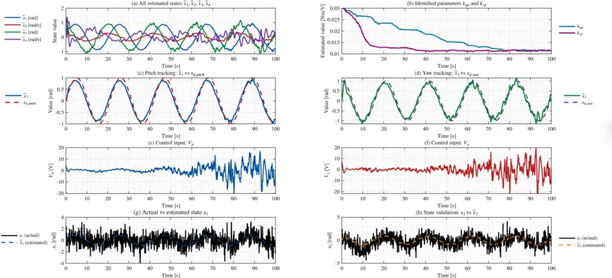

This project focused on the nonlinear modeling and control analysis of a 2-DoF bicopter system, with emphasis on analytical derivation, nonlinear control design, and state estimation.
The full nonlinear dynamics were derived from first principles, formulated in state-space representation, and implemented in a dedicated simulation environment for controller evaluation.
Mathematical Modeling
The dynamic equations were obtained using rigid-body modeling assumptions, incorporating thrust forces, torque balance, and gravitational coupling effects. A complete nonlinear state-space model was derived and validated numerically.

Control Design
Multiple control strategies were implemented and evaluated in simulation:
- Linear Quadratic Regulator (LQR)
- Lyapunov-based nonlinear control
- Feedback Linearization
- Gain Scheduling approaches
Controller performance was evaluated under nonlinear coupling effects and actuator saturation constraints through numerical simulations.
State Estimation
An Extended Kalman Filter (EKF) was developed for nonlinear state estimation under measurement noise. The estimator was integrated with the feedback linearization controller and evaluated in closed-loop simulations to assess tracking performance and robustness.

Embedded Implementation (Reproduction Study)
A separate 1-DoF pitch prototype was assembled using an Arduino Nano 33 IoT to explore embedded control implementation aspects. The system identification and MPC workflow was reproduced following a standard embedded control example provided by MathWorks, focused on design of experiments for data collection, system identification from input-output data, MPC design using the identified discrete-time model, and closed-loop deployment using Simulink support for Arduino.
This exploratory stage aimed to understand real-time deployment constraints and computational feasibility, and was independent from the nonlinear modeling and control framework developed in simulation.